UT. 6 - Interconexión, balanceo y escalado de infraestructuras
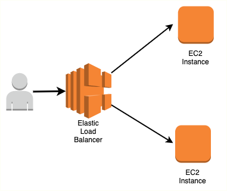
Resultados de aprendizaje y criterios de evaluacion que se evaluarán en esta unidad.
| Resultados de aprendizaje de la unidad didáctica: |
|---|
| RA. 3: Diseña y configura redes virtuales y servicios de cómputo en la nube, aplicando buenas prácticas de seguridad, estrategias de balanceo de carga, escalado automático y aprovechando tecnologías serverless, contenedores y máquinas virtuales según casos de uso específicos. |
| Criterios de evaluación de la unidad didáctica: |
|---|
| d) Se ha realizado la selección de servicios de computación adecuados según casos de uso. |
| e) Se ha llevado a cabo la configuración y gestión de balanceo de carga y escalado automático. |
1 - Interconexiones de redes, peer connection (peering) y transit gateway
1.1 - Introducción
En los entornos de computación en la nube, resulta habitual la necesidad de conectar distintas nubes privadas virtuales (VPC) entre sí o con redes locales. AWS ofrece varios mecanismos para lograr esta interconexión, entre los cuales destacan VPC Peering y Transit Gateway. Ambos servicios cumplen el mismo propósito general (permitir la comunicación entre redes), pero lo hacen a través de enfoques distintos, lo que determina su conveniencia según el tamaño y la complejidad de la infraestructura.
-
VPC Peering: Establece una conexión directa punto a punto entre dos VPC, permitiendo que los recursos de ambas se comuniquen mediante direcciones IP privadas. Este método es especialmente útil en entornos pequeños o cuando se requiere una integración sencilla entre dos VPC.
-
Transit Gateway: Actúa como un concentrador central (hub) que interconecta varias VPC y redes locales (on-premises) a través de un único punto de enlace. Esta arquitectura simplifica enormemente la gestión de redes complejas, ya que permite establecer una topología de tipo hub-and-spoke, donde todas las conexiones pasan por el mismo punto central. Gracias a ello, Transit Gateway ofrece mayor escalabilidad, flexibilidad y control administrativo, siendo la opción más adecuada para organizaciones que gestionan múltiples entornos en AWS.
Resumen
| ¿Cuándo utilizar VPC Peering? | ¿Cuándo utilizar VPC Peering? |
|---|---|
| - Se requiere comunicación directa entre dos VPC. | Se gestiona una red extensa y compleja con múltiples VPC. |
| - La topología de red es pequeña y sencilla. | Es necesario conectar redes locales y otros servicios de AWS. |
| - El coste es un factor determinante. | Se desea centralizar la administración de la red. |
| Se priorizan la escalabilidad y la flexibilidad en la arquitectura. |
1.2 - Peer connection
Para familiarizarnos con el peering en AWS, usaremos el siguiente escenario:
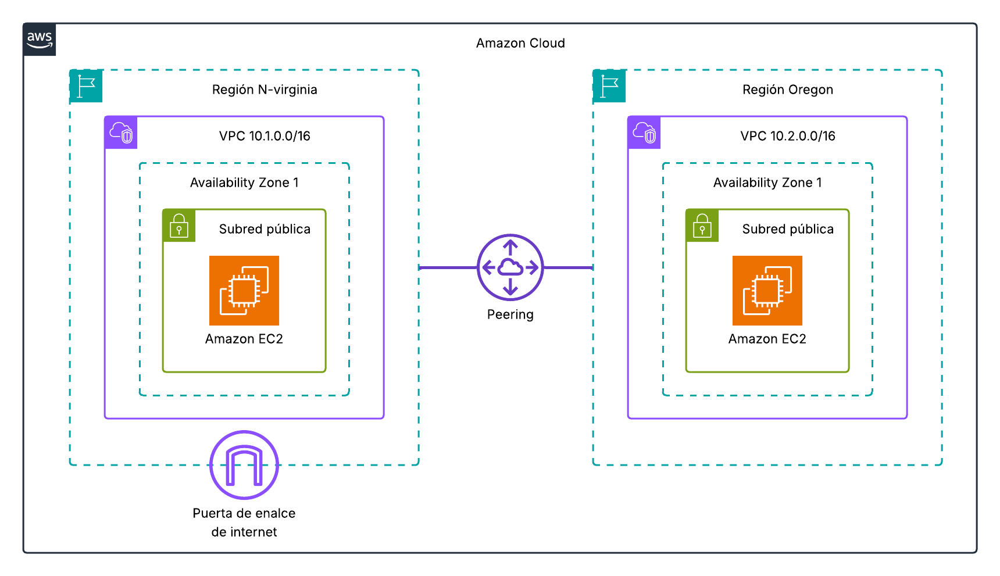
1.2.1 - Crear los elementos básicos
En un primer momento crearemos:
- Las 2 VPC (us-east-1 (N. Virginia) y us.east-2 (Oregon)).
- Las subredes (públicas) y sus respectivas tablas de enrutamiento.
- Las instancias EC2 y sus grupos de seguridad para posibilitar pings y conexiones SSH.
1.2.2 - Realizar el peering entre VPC's
Una vez creada la infraestructura (VPC + subred + EC2 + IGW) iniciaremos las interconección desde la región us-east-1 (N. Virginia).
-
Desde el menú VPC buscamos Interconexiones.
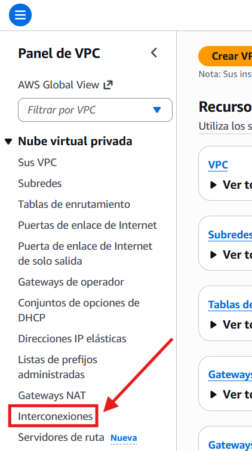
-
En este caso, crearemos la conexión desde la región us-east-1 / Norte de Virginia.
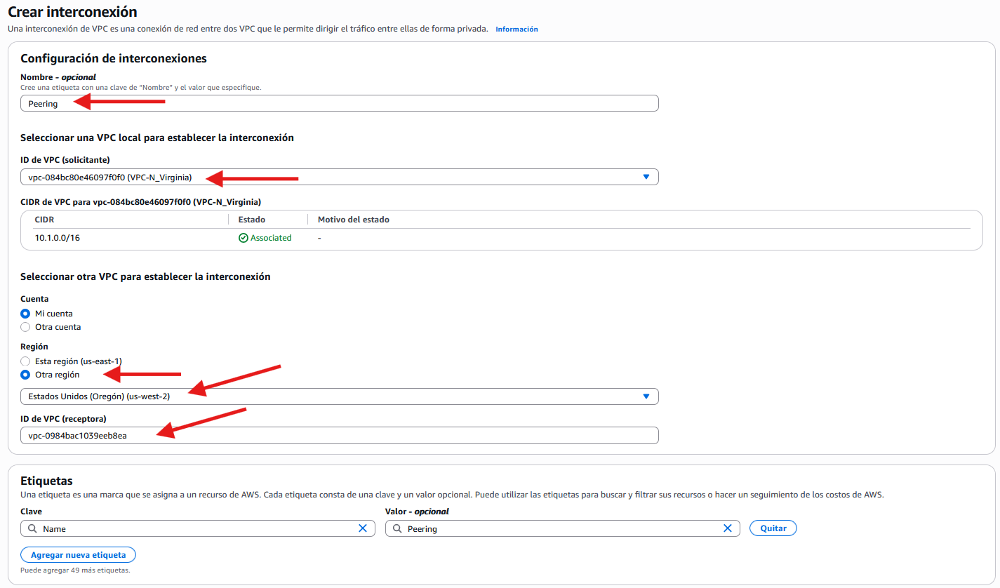
-
Para completar la solicitud de conexión necesitaremos la id de la VPC de la región us-west-2 / Oregón
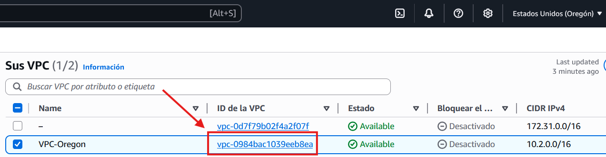
-
Petición de conexión creada, pendiente de aceptación.
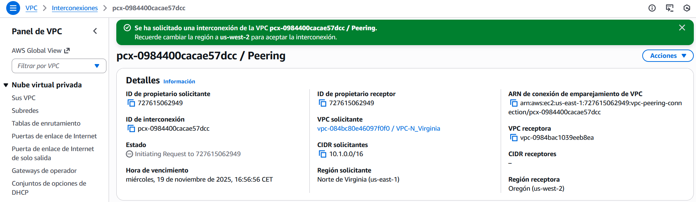
-
Hasta que la otra VPC no acepte la conexión, el estado de la misma será "pendiente".
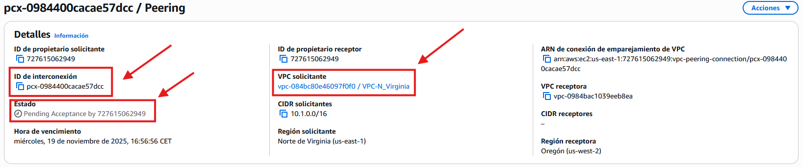
-
En la otra región aceptamos (o rechazamos la petición).
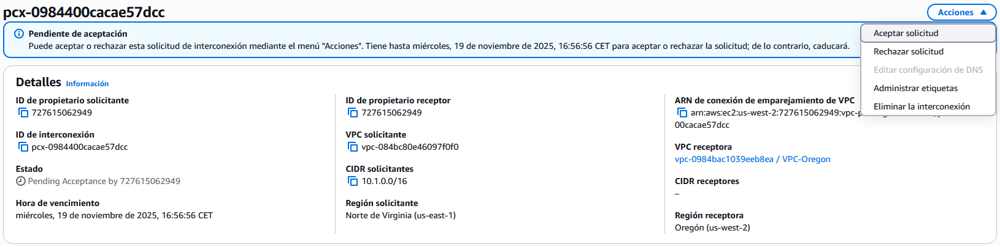
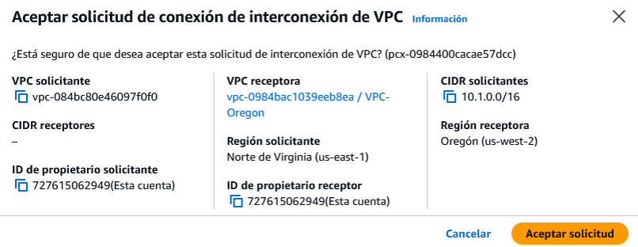
-
En la otra región aceptamos (o rechazamos la petición).
1.2.3 - Configuración de la interconexión
-
Para evitar problemas con la resolución de nombres en el servicio de interconexión, en Interconexiones → DNS, habilitaremos la opción de resolver el dns.
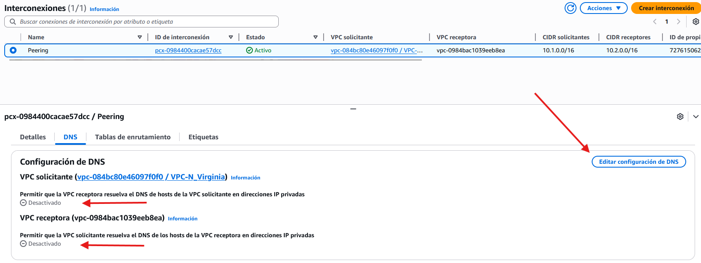
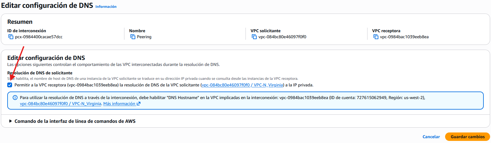
-
Si no deja hacerlo, iremos a la VPC receptora y comprobaremos la configuración de DNS.
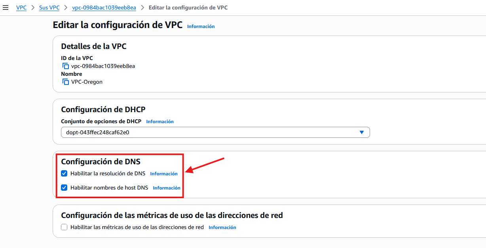
1.2.4 - Configuración de la tablas de enrutamiento
- De la misma manera que para una puerta de enlace de internet (IGW) añadiremos una ruta a las IP's de las VPC's, tanto en la VPC Norte de Virginia como en la VPC Oregón (acordaros de asociar explícitamente la subred a la tabla de enrutamiento).
-
VPC Oregón
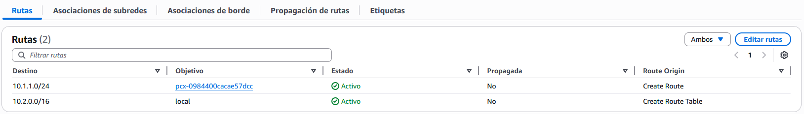
-
VPC Norte de Virginia
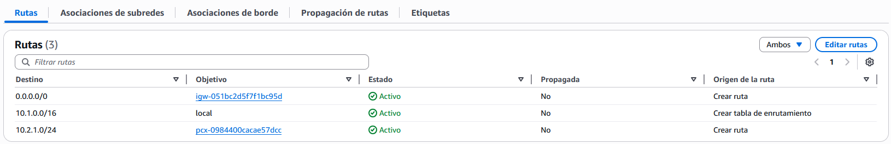
1.2.5 - Configuración de los grupos de seguridad de las instancias
-
EC2 Oregón
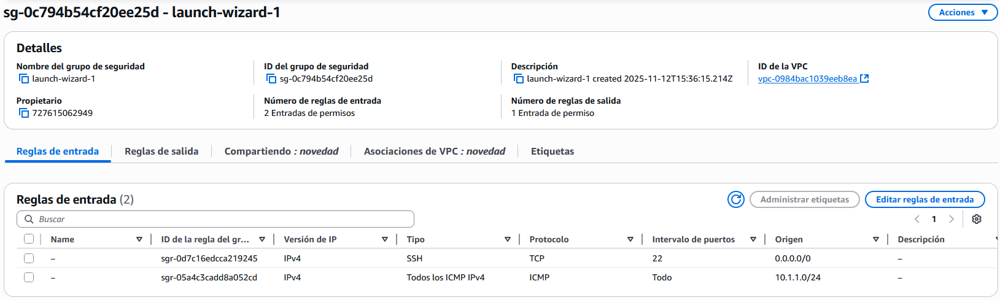
-
EC2 Norte de Virginia
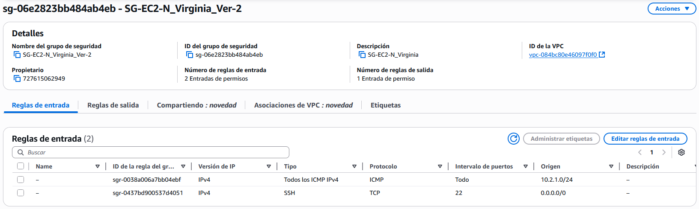
1.2.6 - Pruebas de conexión
-
ping de EC2 Norte de Virginia hacia Oregon
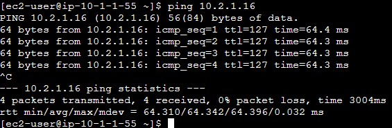
-
ping de EC2 Oregon hacia Norte de Virginia
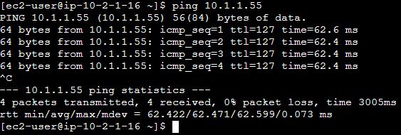
1.3 - Transit Gateway
Un AWS Transit Gateway (TGW) es un servicio de red de Amazon Web Services diseñado para interconectar de forma centralizada múltiples VPC, conexiones VPN, Direct Connect y redes on-premise dentro de una misma región. Actúa como un router regional de alto rendimiento, simplificando arquitecturas complejas y reduciendo la necesidad de crear múltiples VPC Peering.
1.3.1 - Escenario
Para familiarizarnos con el Transit gateway de AWS, usaremos el siguiente escenario:
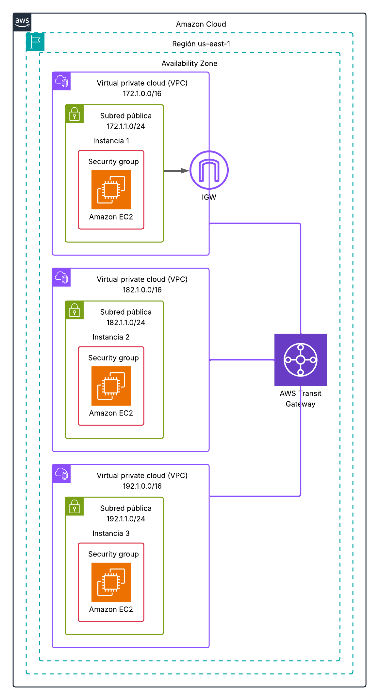
1.3.2 - Creación del transit gateway
Una vez implementada la arquitectura de red, pasaremos a crear y configurar el Transit gateway.
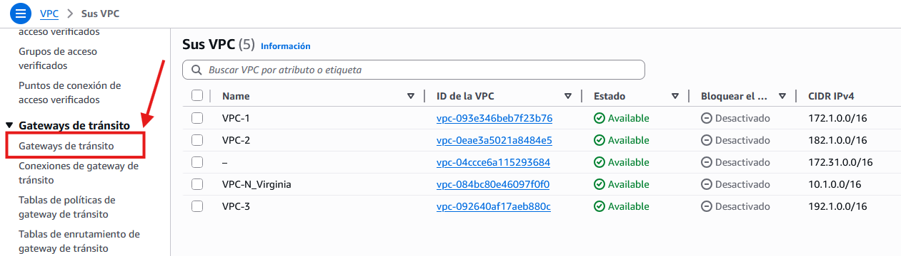
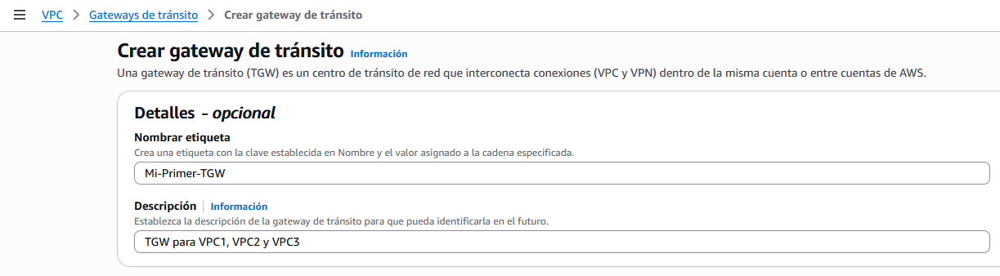
Nos esperamos a que su estado pase de pending a available.
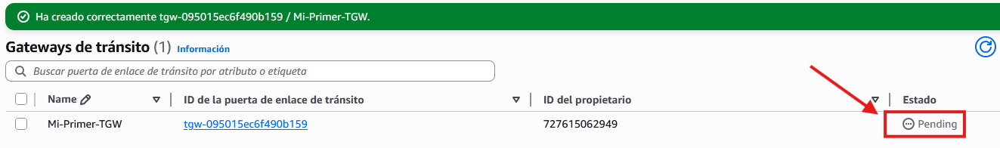
1.3.3 - Conexiones del transit gateway
Como tenemos 3 VPC's necesitaremos crear 3 conexiones.
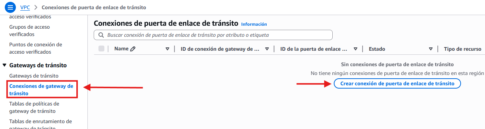
Repetiremos este paso para las otras 2 VPC's.
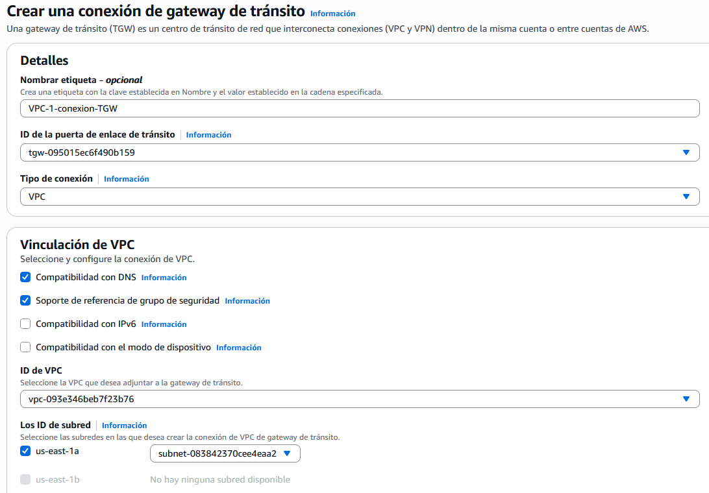
Resultado final con las 3 conexiones creadas.
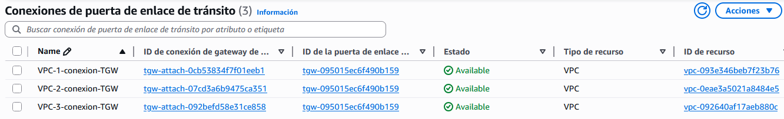
1.3.4 - Modificar las tablas de enrutamiento de las VPC's
Podemos ver que AWS ha creado una tabla de enrutamiento para el TGW pero, no es aquí donde configuraremos las nuevas rutas sino en la tabla de enrutamiento de cada VPC.
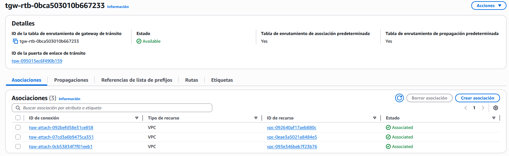
Tabla de enrutamiento de la VPC-1 (no es necesario ser tan restrictivo con las rutas ya que la propia conexión del TGW se ha creado para una VPC y una subred concreta).
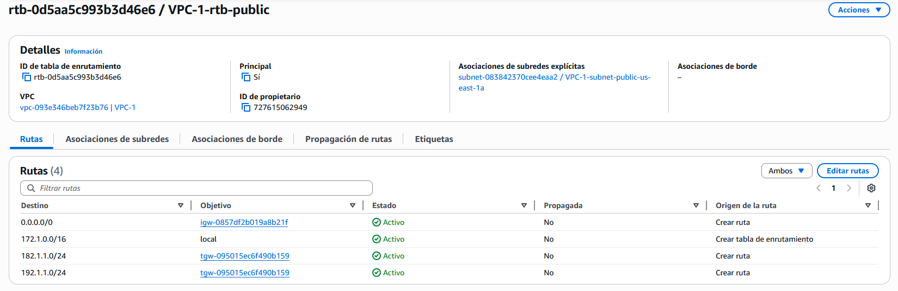
1.3.5 - Pruebas de conexión
No conectamos a la instancia 1 (por consola o por SSH) y vemos al hacer ping, que hay comunicacion entre instancias a pesar de encontrarse en VPC's distintas (dentro de una misma región).
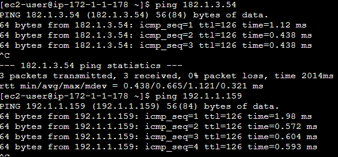
1.3.6 - Pruebas adicionales
Propargarse a otra instancia y comprobar si esa instancia tiene conexión a internet
¿Qué soluciones podemos aplicar para que las instancias de la VPC-2 y VPC-3 tengan conexión a internet?
1.4 - Tarea RA3-CEd
Monta el siguiente escenario:
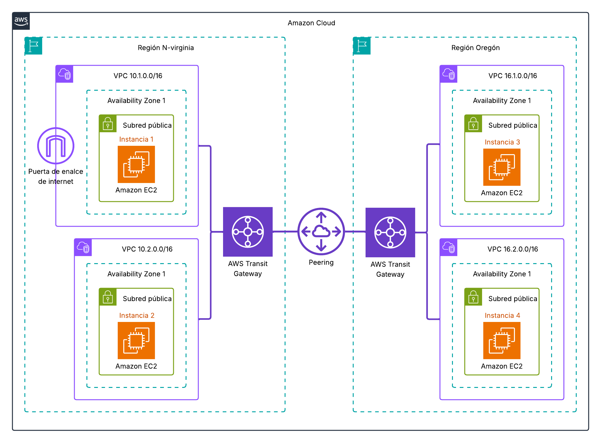
- Se trabajará en 2 regiones distintas (us-east-1 / N-Virginia y us-west-2 / Oregón).
- En cada región estarán ubicadas dos VPCs con sus correspondientes subredes interconectadas por un Transit Gateway.
-
Para interconectar las regiones usaremos un peer connection pero no desde Interconexiones sino desde Conexiones de gateway de tránsito.
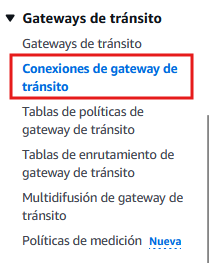
-
Rellenaremos los campos con los datos de nuestros transit gateways.
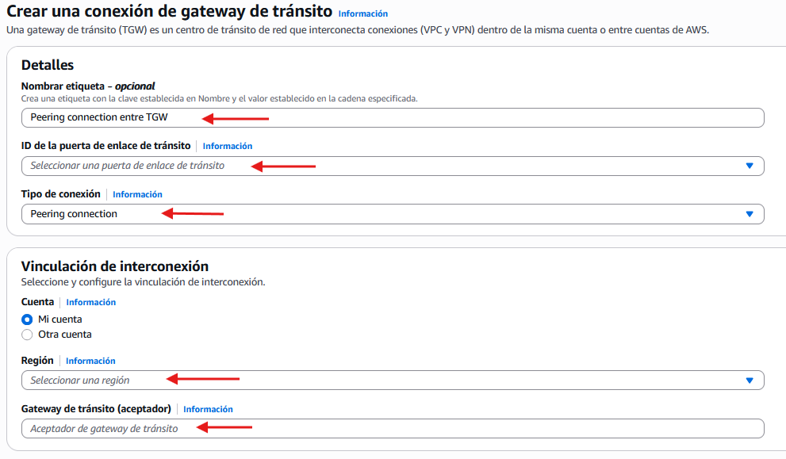
-
Conectarse a la instancia 1 y realizar capturas de pings al resto de instancias (1 captura + 3 pings).
- Realizar capturas de la propagación y pings con éxito a todas las instancias del escenario (3 capturas de 3 pings cada una).
2 - Equilibrado y escalado de infraestructuras
2.1 - Introducción
En entornos de computación en la nube, el equilibrio de carga y el escalado automático son dos componentes esenciales para garantizar la disponibilidad, el rendimiento y la eficiencia de las aplicaciones y servicios. .
-
Elastic Load Balancing (ELB): Distribuye automáticamente el tráfico entrante entre múltiples instancias de Amazon EC2, contenedores y direcciones IP en una o más zonas de disponibilidad. Esto asegura que ninguna instancia se sobrecargue y que las aplicaciones permanezcan disponibles incluso si una o más instancias fallan.
-
Auto Scaling: Permite ajustar automáticamente la capacidad de las instancias EC2 en función de las condiciones definidas por el usuario. Esto significa que se pueden añadir o eliminar instancias según la demanda del tráfico, lo que ayuda a mantener el rendimiento óptimo y a controlar los costos operativos.
La combinación de ambos permite crear arquitecturas altamente disponibles, resilientes, rentables y tolerantes a fallos, asegurando que la infraestructura responda adecuadamente a fluctuaciones del tráfico sin intervención manual.
2.2 - Elastic Load Balancing (ELB)
Elastic Load Balancing (ELB) es un servicio de AWS que distribuye automáticamente el tráfico entrante entre múltiples instancias de Amazon EC2, contenedores y direcciones IP en una o más zonas de disponibilidad. ELB ayuda a mejorar la disponibilidad y la tolerancia a fallos de las aplicaciones al garantizar que el tráfico se dirija solo a las instancias saludables.
Dentro de ELB existen cuatro tipos de balanceadores, cada uno orientado a distintos casos de uso:
| Tipo de balanceador | Capa OSI | Casos de uso principales |
|---|---|---|
| Application Load Balancer (ALB) | Capa 7 | Aplicaciones web HTTP/HTTPS, microservicios, routing basado en URLs o cabeceras |
| Network Load Balancer (NLB) | Capa 4 | Tráfico TCP/UDP de alto rendimiento, baja latencia, millones de conexiones por segundo |
| Gateway Load Balancer (GWLB) | Capa 3 | Integración con firewalls, IDS/IPS y appliances de red |
| Classic Load Balancer (CLB) | Capa 4/7 | Versión heredada; solo recomendado para aplicaciones antiguas |
2.2.1 - Escenario propuesto
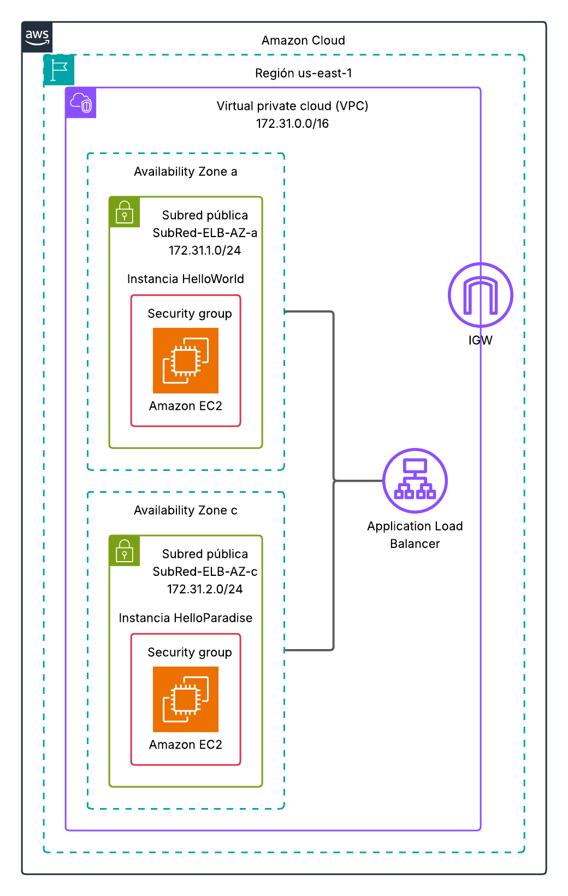
Antes de implementar el balanceador de carga, implementaremos la infraestructura base. Para ello contamos con los siguientes elementos:
-
VPC denominada VPC-ELB
- Rango de direcciones (CIDR): 172.31.0.0/16
-
Subred pública en la zona de disponibilidad “a”
- Nombre: SubRed-ELB-AZ-a
- Rango de direcciones (CIDR): 172.31.1.0/24
- Subred pública en la zona de disponibilidad “c”
- Nombre: SubRed-ELB-AZ-c
- Rango de direcciones (CIDR): 172.31.2.0/24
- Instancias EC2 disponibles para el balanceo
- HelloWorld
- HelloParadise
- Ambas instancias:
- Se encuentran en zonas de disponibilidad distintas (una en a y otra en c)
- Disponen de IP pública para permitir el acceso externo
2.2.2 - Instancias EC2
A diferencia de las otras prácticas donde solo lanzabamos las instancias sin hacer nada con ellas, en esta instalaremos un servidor web y un archivo indiex.html para comprobar el correcto funcionamiento del equilibrador de carga.
Paso 1 - Detalles avanzados
Durante el lanzado de la instancia EC2 buscar el apartado Detalles avanzados.
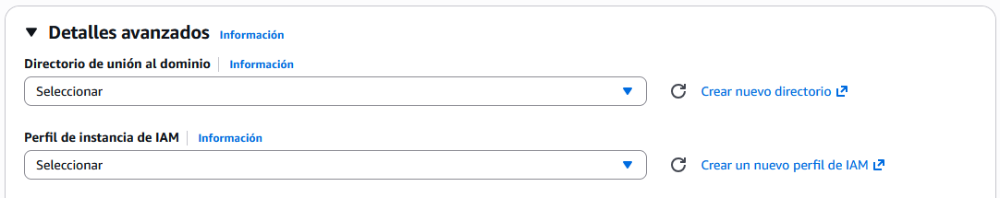
Paso 2 - Datos de usuario
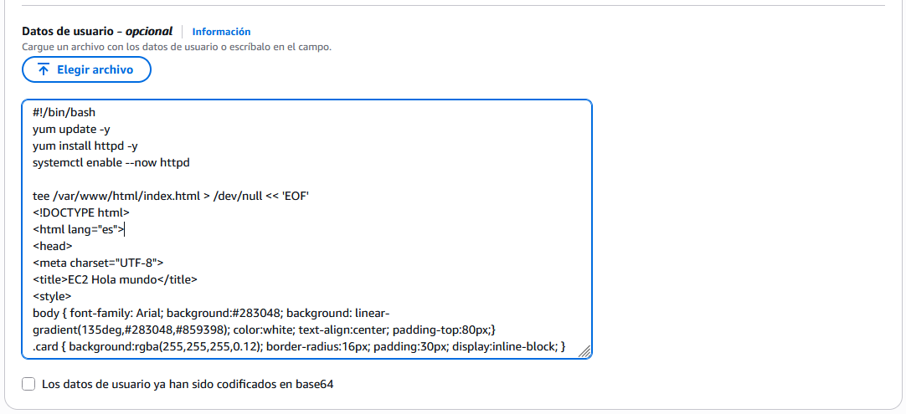
Dentro del campo Datos de usuario pondremos un script que se ejecutará al lanzar la instancia.
Adaptar el script para cada instancia, cambiando Instancia 1 por Instancia 2 y Hola mundo por Hola paraíso.
#!/bin/bash
yum update -y
yum install httpd -y
systemctl enable --now httpd
sudo tee /var/www/html/index.html > /dev/null <<EOF
<!DOCTYPE html>
<html lang="es">
<head>
<meta charset="UTF-8">
<title>Instancia 1</title>
<style>
body {
font-family: Arial;
background: #283048;
background: linear-gradient(135deg,#283048,#859398);
color: white;
text-align: center;
padding-top: 80px;
}
.card {
background: rgba(255,255,255,0.12);
border-radius: 16px;
padding: 30px;
display: inline-block;
}
</style>
</head>
<body>
<div class="card">
<h1>¡Hola mundo!</h1>
<p>Instancia 1</p>
<p>Hora: <b id="hora"></b></p>
</div>
<script>
const ahora = new Date();
const hora = String(ahora.getHours()).padStart(2,'0') + ':' +
String(ahora.getMinutes()).padStart(2,'0') + ':' +
String(ahora.getSeconds()).padStart(2,'0');
document.getElementById("hora").innerHTML = "<b>" + hora + "</b>";
</script>
</body>
</html>
EOF
2.2.3 - Creación del balanceador de carga
1. Desde EC2 accedemos a Balanceadores de carga
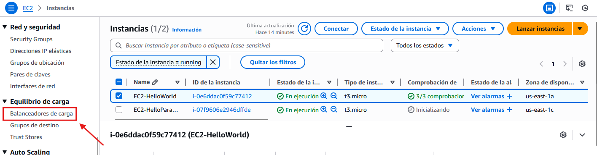
Configuramos los parámetros principales:
- Nombre LB-Instancias
- Expuesto a internet
-
IP tipo: IPv4
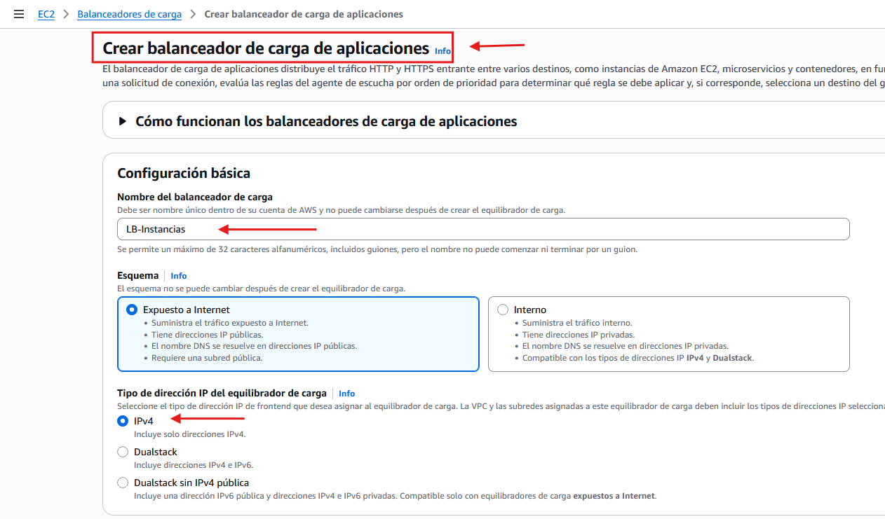
Mapeo de red.
- VPC: VPC-ELB
-
Seleccionamos SubRed-ELB-AZ-a y SubRed-ELB-AZ-c
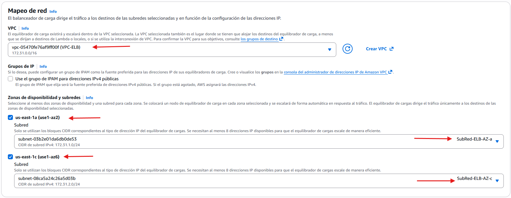
2. Grupos de seguridad
Creamos un grupo de seguridad para el balanceador de carga , asociamos un SG que permita HTTP (80) desde cualquier origen.
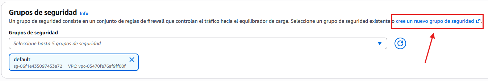
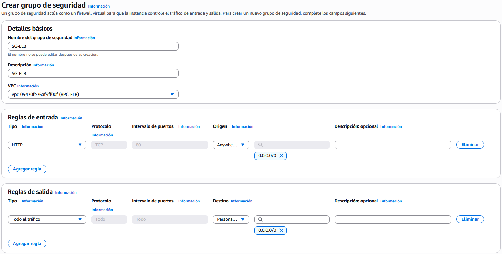
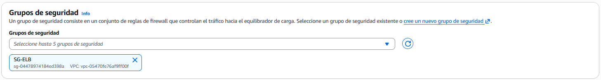
3. Agentes de escucha y direccionamiento
En este apartado configuraremos los puertos sobre los cuales el equilibrador de carga aceptará las conexiones entrantes y determinará a qué instancias se redirigirán.
- Protocolo: HTTP / 80
-
Acción predeterminada: Reenviar el tráfico al grupo de destino (conjunto de instancias que recibirán las peticiones).
Si todavía no disponemos de ningún grupo de destino creado, seleccionamos la opción “Agregar grupo de destino” y luego Cree un grupo de destino y lo configuramos antes de continuar.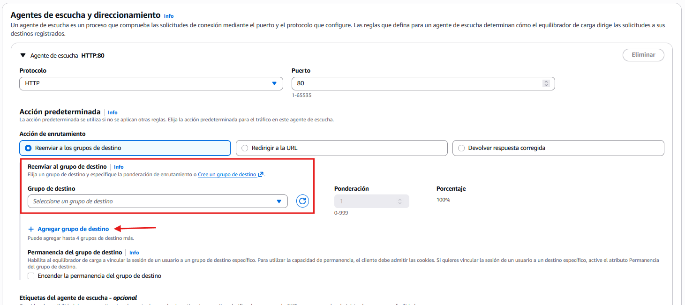
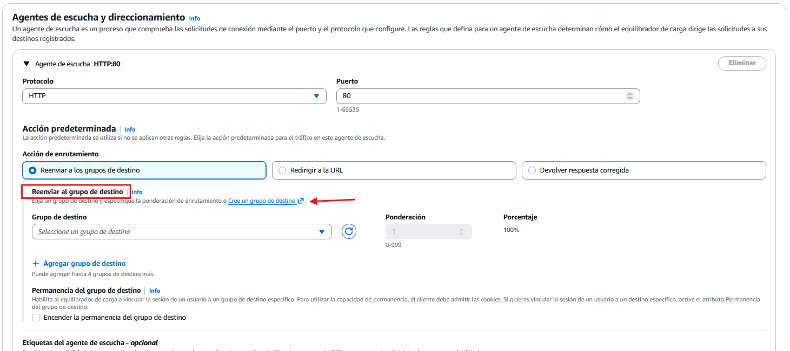
-
Crear grupo de destino
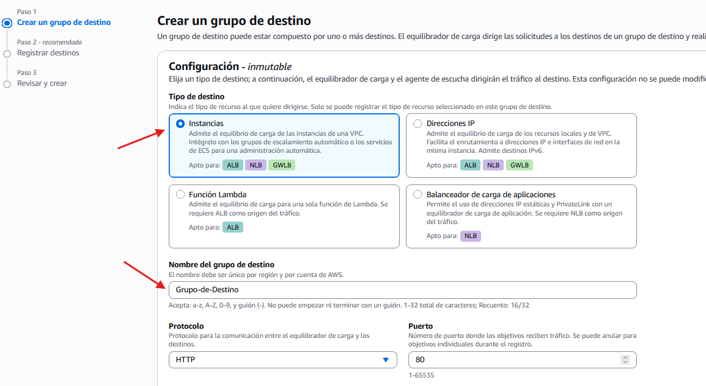
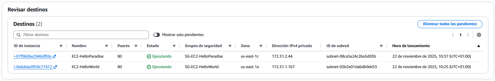
-
Revisamos los datos y creamos el grupo de destino
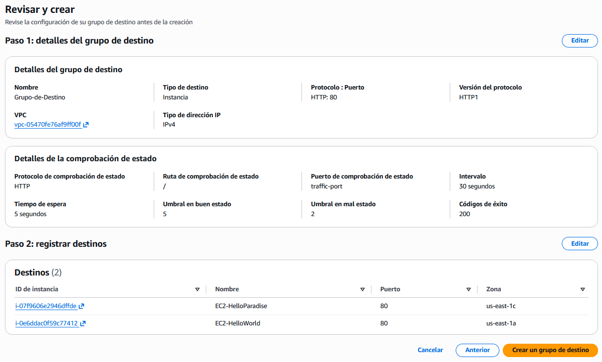
-
Finalizamos la creación del equilibrador de carga
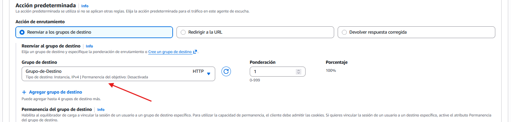
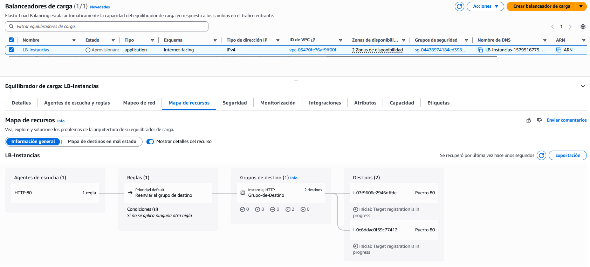
2.2.4 - Editar los atributos del equilibrador de carga
Una vez creado el equilibrador de carga, revisaremos y ajustaremos sus atributos para optimizar su funcionamiento. Estos atributos determinan el comportamiento del equilibrador de carga y la forma en que gestiona las peticiones de los usuarios.
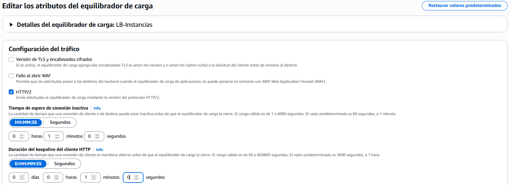
Dentro de este apartado se pueden ajustar, entre otros, los siguientes parámetros:
-
Tiempo de inactividad de conexión
El tiempo de espera de la conexión inactiva es el período de tiempo que una conexión de cliente o de destino existente puede permanecer inactiva, sin que se envíen ni reciban datos, antes de que el equilibrador de carga cierre la conexión. -
Duración del valor keepalive del cliente HTTP
La duración del valor keepalive del cliente HTTP es el tiempo máximo durante el que un Equilibrador de carga de aplicación mantiene una conexión HTTP persistente con un cliente. Una vez transcurrido el tiempo del valor keepalive del cliente HTTP configurado, el Equilibrador de carga de aplicación acepta una solicitud más y, a continuación, devuelve una respuesta que cierra la conexión sin problemas. -
Protección contra eliminación
Para evitar que el equilibrador de carga se elimine por error, puede habilitar la protección contra eliminación. De forma predeterminada, la protección contra eliminación del equilibrador de carga está deshabilitada. -
Modo de mitigación de desincronización
El modo de mitigación de desincronización protege a la aplicación de problemas causados por desincronización HTTP. El equilibrador de carga clasifica cada solicitud en función de su nivel de amenaza, permite solicitudes seguras y, además, mitiga el riesgo según lo especificado en el modo de mitigación que determine. -
Conservación del encabezado del host
Cuando habilita el atributo Conservar encabezado de host, el Equilibrador de carga de aplicación conserva el encabezado Host de la solicitud HTTP y la envía a los destinos sin ninguna modificación. Si el Equilibrador de carga de aplicación recibe varios encabezados Host, los conserva todos. Las reglas de oyente se aplican solo al primer encabezado Host recibido.
2.2.5 - Comprobación del funcionamiento del equilibrador de carga
Acceso al equilibrador de carga
A diferencia de las instancias, el acceso al equilibrador de carga solo se puede realizar a través de su DNS.
Nota:
Aunque las instancias tienen IP pública, también es posible acceder a ellas tanto por IP como por DNS, pero este acceso se realiza directamente a la instancia, no a través del balanceador.
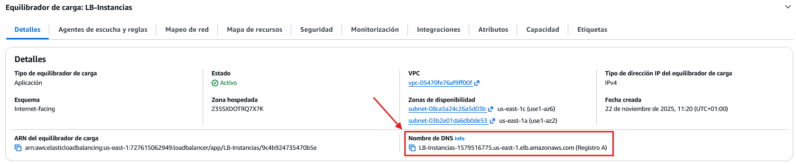
Si actualizamos repetidamente el navegador para acceder al recurso, observaremos que, en función del balanceo y de la latencia, la respuesta irá alternando entre una instancia y la otra.
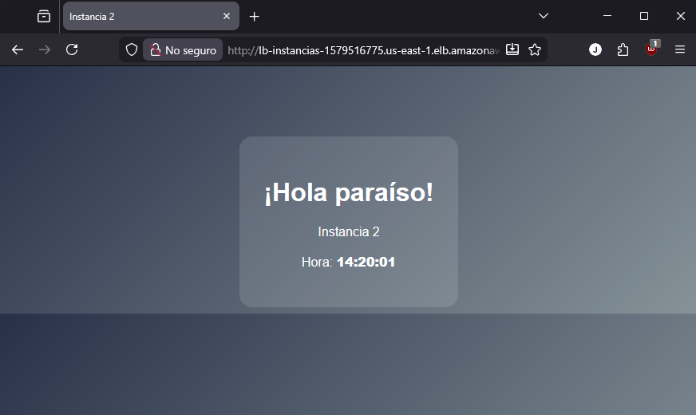
2.3 - Tarea RA3-CEe
Tarea RA3-CEe
Realizar capturas de cada instancia entrando por el ELB.
Adjuntar las capturas a un documento, comentando cada captura.
Subir el documento a AULES en la tarea correspondiente.
2.4 - Auto Scaling
Auto Scaling permite adaptar la capacidad de cómputo de la infraestructura a la demanda real del sistema.
AWS ofrece dos enfoques principales:
| Tipo | Descripción |
|---|---|
| EC2 Auto Scaling | Escalado automático exclusivo de instancias EC2 mediante Auto Scaling Groups (ASG) |
| AWS Auto Scaling | Escalado automático de múltiples recursos además de EC2, como DynamoDB, Aurora, ECS, etc. (Recursos no disponibles con LabRole).** |
2.4.1 - Escalado automático de instancias (EC2 ASG) EC2
- El escalado automático de instancias EC2 se gestiona a través de los Auto Scaling Groups (ASG), que permiten definir políticas para añadir o eliminar instancias en función de métricas como la utilización de CPU, el tráfico de red o cualquier otra métrica personalizada.
- El escalado automático no es exclusivo de las instancias EC2. También se puede aplicar a otros servicios como ECS (Elastic Container Services) y EKS (Elastic Kubernete Service).
- ASG integra diversos servicios como CloudWatch (servivio de monitorización) y también el ELB (Elastic Load Balancing) que acabamos de ver. CloudWatch monitoriza las métricas y, cuando se cumplen las condiciones definidas en las políticas de escalado, ASG ajusta automáticamente el número de instancias EC2 en el grupo. En el caso de que el ASG esté asociado a un ELB, las nuevas instancias se registran automáticamente en el balanceador de carga, asegurando que el tráfico se distribuya adecuadamente entre todas las instancias disponibles.
- En el caso de que una instancia EC2 falle o se vuelva inactiva, ASG puede detectar este estado a través de las comprobaciones de estado (status checks) y reemplazar automáticamente la instancia defectuosa, manteniendo así la capacidad y disponibilidad del grupo según lo definido en la configuración del ASG.
2.4.2 - Estrategias de auto escalado
Las estrategias de auto escalado permiten ajustar automáticamente la cantidad de instancias para mantener la disponibilidad y gestionar la demanda de manera eficiente. El escalado siempre será horizontal, lo que significa que el ASG añade o elimina instancias en lugar de cambiar el tamaño de una sola.
Dentro del tipo de estrategias encontramos:
-
Escalado Dinámico (Dynamic Scaling):
Es la estrategia más común y se basa en la respuesta automática a la demanda real mediante métricas de CloudWatch. -
Escalado Programado (Scheduled Scaling):
Esta estrategia permite aumentar o disminuir la capacidad basándose en horarios específicos. -
Escalado Predictivo (Predictive Scaling):
Utiliza modelos de Machine Learning para analizar datos históricos y predecir cuándo ocurrirán cambios futuros en la demanda. -
Escalado Manual:
Consiste en ajustar manualmente el tamaño deseado del grupo de Auto Scaling.
Para que estas estrategias funcionen, Auto Scaling utiliza los siguientes elementos:
- Launch Template (Plantilla de Lanzamiento): Es el "plano" que define cómo debe ser cada nueva instancia (AMI, tipo de instancia, volúmenes EBS, roles de IAM y scripts de User Data).
- Capacidad Mínima, Máxima y Deseada: Se definen límites para asegurar que siempre haya un número base de servidores funcionando (mínimo) y que el sistema no exceda un presupuesto determinado (máximo).
- Elasticidad: Es la capacidad no solo de escalar hacia afuera (scaling out) para añadir recursos, sino también de escalar hacia adentro (scaling in) para eliminar instancias cuando ya no son necesarias y así optimizar costos.
- Health Checks: Auto Scaling monitorea constantemente el estado de las instancias a través de verificaciones de EC2 (health checks) o del equilibrador de carga (ELB.)
2.4.3 - Escenario propuesto
En este caso solo deberemos definir la VPC, las zonas de disponibilidad y el grupo de seguridad de las EC2. El lanzamiento de las instancias se hará con una plantilla que cargaremos en el ASG.
2.4.4 - Creación de la plantilla de lanzamiento
Vamos a EC2 → Plantillas de lanzamiento → Crear plantilla de lanzamiento.
Definimos el nombre y la descripción de la plantilla de lanzamiento.
Seleccionamos la AMI que usaremos.
Seleccionamos el tipo de instancia y el par de claves.
Seleccionamos el grupo de seguridad de las instancias que se crearán con el ASG.
En detalles avanzados ponemos un script que instalará un servidor web (similar al utilizado en el ELB).
Si todo ha ido bien, tendremos creada nuestra plantilla de lanzamiento.
2.4.5 - Creación del grupo de escalado automático
Vamos a grupos de auto scaling.
Damos un nombre a nuestro ASG y seleccionamos la plantilla de lanzamiento.
Elegimos las opciones de lanzamiento.
Integrar en otros servicios: Dejamos todas las opciones por defecto.
Configurar escalamiento y tamaño de grupo:
Elegimos una capacidad deseada, mínima y máxima de 2, sin escalamiento automático. En un caso real, será conveniente definir la política de escalamiento.
Añadir notificación: Dejamos en blanco.
Añadir etiquetas: Dejamos en blanco.
Revisar: Revisamos y creamos el grupo de autoescalado.
Si todo ha ido bien, tendremos nuestro primer grupo de autoescalado creado.
2.4.6 - Explorando el grupo de escalado automático
Si vamos a ASG → Administración de instancias veremos que el ASG ha creado 2 instancias. Una en cada zona de disponibilidad.
En EC2, veremos las 2 instancias creadas por el ASG.
También podemos acceder a ellas.
Si eliminamos una instancia:
Pasado el periodo de carencia, el ASG lanzará un nueva instancia.
2.4.7 - Creación de una AMI a partir de una instancia existente
Este apartado no tiene que ver directamente con el ASG pero es importante saber cómo crear una AMI personalizada a partir de una instancia EC2 existente, ya que en muchos casos necesitaremos lanzar instancias con configuraciones específicas.
- Seleccionamos la instancia EC2 que queremos convertir en AMI.
- Rellenamos los campos necesarios para la creación de la AMI.
- Una vez creada la AMI, podemos verla en el apartado Imágenes → AMIs.
- Si decidimos lanzar una nueva instancia podremos seleccionar la AMI que acabamos de crear.
3 - Route 53
Enlaces de interés
Documentación de AWS
Elastic Load Balancing
Atributos del Elastic Load Balancing
VPC peering
Transit Gateway
Grupos de EC2 autoescalado
Tutorial de ASG+ELB
Documentacion de AWS autoscaling